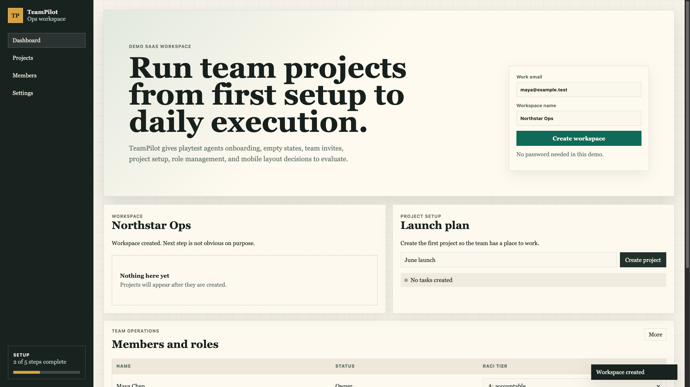
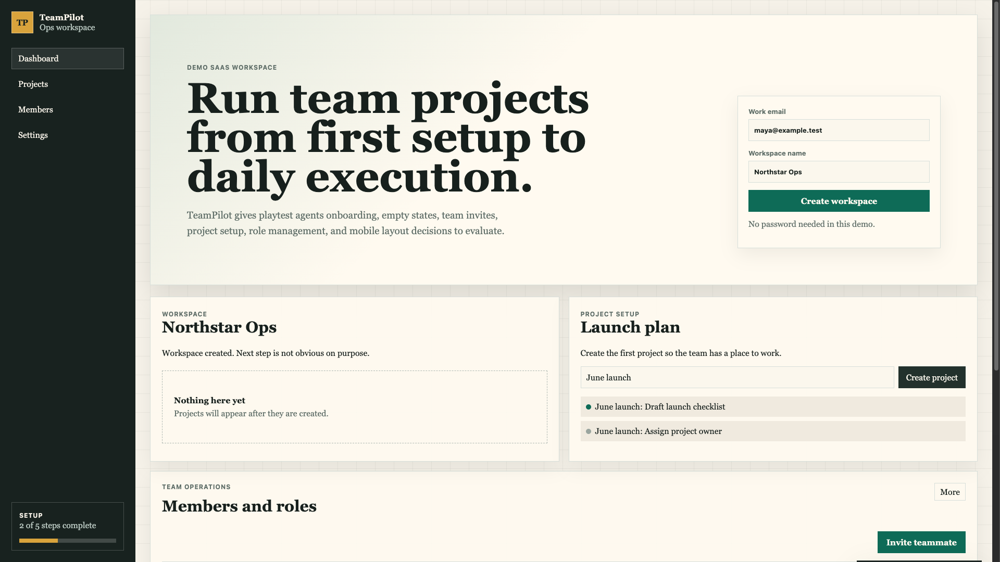
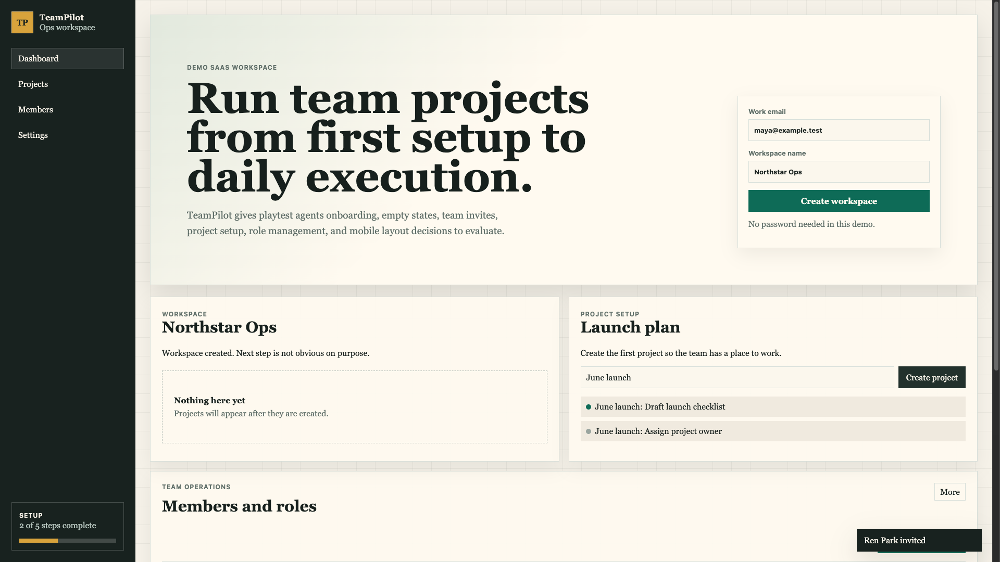
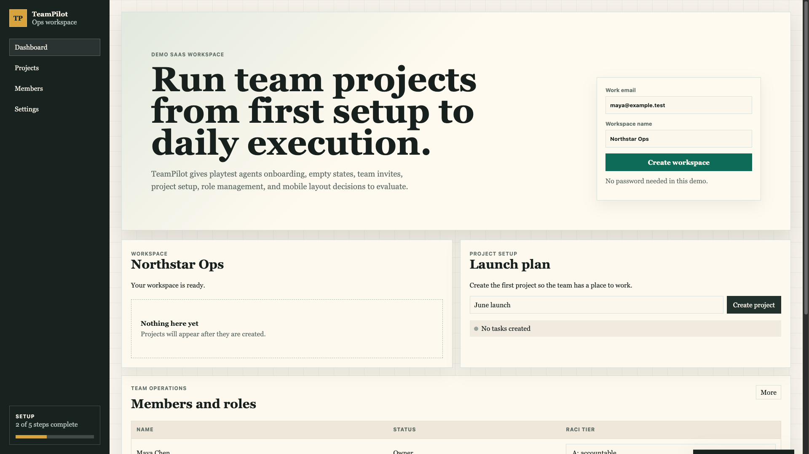

Playtest report - TeamPilot
Demo run · driver: browser-use CLI · scope: full sweep
Verdict: TeamPilot is coherent enough to understand as a small team workspace, but the first-run experience loses momentum after workspace creation. The biggest issues are weak next-step guidance, a hidden invite action, and role terminology that assumes operational knowledge most users will not have.
Personas: Maya, Ren, Sam
Findings: 0 blocker · 1 high · 2 medium · 1 low
What works well
- The visual hierarchy makes the product category clear quickly: workspace, project setup, and team operations are visible in one scan.
- The create project interaction is direct once the user reaches the project card.
- The demo has enough realistic surface area for a playtest: onboarding, empty states, team invites, role controls, and responsive concerns.
What's broken
No functional blockers were observed in this demo run. All tested buttons responded and produced visible state changes.
UX to improve
Workspace creation does not guide the next action high
- Feature / step
- Onboarding after Create workspace
- Persona
- Maya - first-time founder
- Expectation
- I expected the app to tell me the next most important setup step after creating the workspace.
- What happened
- The workspace card said the workspace was ready, but the empty state only said projects will appear after they are created.
- Why it is a problem
- The user has to infer that creating a project is the next step. The page has a project card nearby, but the empty state itself does not point to it.
- Suggested fix
- Make the empty state actionable: add a primary "Create your first project" button or link the empty state directly to the project setup card.
- Evidence

Invite teammate is hidden behind a generic More button medium
- Feature / step
- Team operations member invitation
- Persona
- Sam - cautious workspace admin
- Expectation
- I expected inviting a teammate to be the primary action in the Members and roles section.
- What happened
- The visible section only showed a small "More" button. The invite action appeared only after opening that menu.
- Why it is a problem
- Inviting members is a core team setup action. Hiding it makes the admin scan the table and navigation before discovering the next step.
- Suggested fix
- Promote "Invite teammate" to a visible primary button in the section header. Keep secondary actions inside More.
- Evidence

Role label uses unexplained RACI jargon medium
- Feature / step
- Role management table
- Persona
- Sam - cautious workspace admin
- Expectation
- I expected plain permission labels such as Admin, Member, Viewer, or a short explanation of what each role allows.
- What happened
- The column is labeled "RACI tier" and dropdown options use abbreviations like "A: accountable" and "R: responsible".
- Why it is a problem
- The admin cannot confidently choose permissions without knowing whether these labels affect access rights, task ownership, or notification behavior.
- Suggested fix
- Rename the column to "Role" or "Project responsibility" and add short helper text or tooltips explaining each option.
- Evidence

Mobile preview warns about a responsive issue but does not let the user resolve it low
- Feature / step
- Responsive surface
- Persona
- Ren - invited teammate
- Expectation
- I expected the mobile preview to show the same core next action or explain how the mobile flow differs.
- What happened
- The preview shows "Open menu" and says the main action moves into the menu on small screens.
- Why it is a problem
- It demonstrates the issue but would still leave a mobile user doing extra navigation to continue setup.
- Suggested fix
- Keep one primary next action visible on mobile, even if secondary navigation moves into a menu.
- Evidence

Per-persona journeys
Maya - first-time founder
Goal: create a workspace and start the first project.
I land on TeamPilot and immediately understand this is a team workspace. The setup form is clear, so I create "Northstar Ops". Now I expect the product to move me forward. I see "Your workspace is ready" and an empty box saying projects will appear after they are created. I pause because the empty state describes the future but does not give me the action. I eventually notice the "Project setup" card beside it and create "June launch". That works, but I had to connect the dots myself.
Ren - invited teammate
Goal: understand what work exists and where to start.
I scan the dashboard for active work. The project area makes sense after a project exists because the checklist appears under the launch plan. The member section is less clear to me. I can see names and status, but "RACI tier" feels like internal process language. If I were just invited to help, I would not know whether this affects permissions, ownership, or who gets notified.
Sam - cautious workspace admin
Goal: invite a teammate and choose a safe role.
I go to Members and roles expecting an Invite button near the section title. I only see "More", which feels like secondary actions, not setup. I open it and find Invite teammate. The invite works, but then I need to choose a role. The options are RACI terms, so I slow down. I do not want to accidentally give someone the wrong access because the label does not explain what the choice controls.
Couldn't test
- Persistent auth, backend data saving, and real invitation emails - the demo is intentionally local and static.